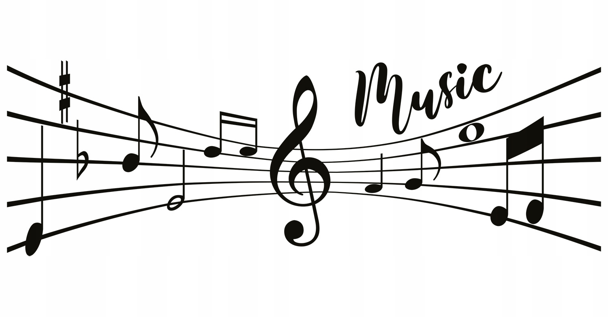

<!DOCTYPE html>
<html lang="en">
<head>
    <link rel="stylesheet" href="style.css">
    <meta charset="UTF-8">
    <meta name="viewport" content="width=device-width, initial-scale=1.0">
    <title>Document</title>
</head>
<body>
    
</body>
</html>
<p><b><i><u>GRA NA PIANINIE</u></i></b></p>


<P><i>Moim hobby jest gra na pianinie. Jest ona trudna i wymaga dużo czasu i cierpliwsości. Gra na pianinie jest dla ludzi ambitnych. Wymaga trenowania skupienia i szybkiej pracy rąk. Postawa przy pianinie powinna być wyprostowana. 
Ważne jest aby skoordynować  grę obydwoma rękoma. Wiele osób ma z tym problem, jednak na przejście przez ten etap nie ma magicznego sposobu. Po prostu trzeba cierpliwie ćwiczyć. Bez podzielnej uwagi też się nie obejdzie, ponieważ w większości utworów należy użyc pedałów, które ujednolicają dzwięki, i w tym samym momencie grać na klawiszach. Uważam jednak , że pomimo poziomu trudności warto spróbowac. Nawet po kilkuletniej przerwie,  najczęsciej zapamiętuje się utwory i okreslone ruchy ręki. Poziom i szybkość nauki bardzo zależy nie tylko od nauczyciela, ale też od pracy samodzielnej. Dlatego najlepiej jest mieć własne pianino lub dostep do niego. </P>

<P>Na czym polega nauka nut na pięciolinii oraz nauka rozkładu nut na klawiaturze? Nuty są zapisane na pięciolini i ich po położneinie zależy od klucza, np. wiolinowego. Można zacząć od nut w kluczu wiolinowym, ale szybko będzie potrzebna również znajomość klucza basowego. Klucz basowy jest potrzebny, ponieważ w nim zapisywane są nuty niższej części klawiatury, czyli te, które grane są najczęściej lewą ręką. 
Można wyróżnić kilka elementów, które składają się na pracę nad wykonaniem utworu dynamika i artykulacja, styl, interpretacja. Dynamika oznacza poziom głośności wydobycia poszczególnych nut.</P>

<P>Artykulacja określa sposób wydobycia dźwięku. Styl mówi o tym, jaki charakter powinien mieć dany utwór,np. jakie tempo i jaki nastrój. Interpretacja to dodanie własnych emocji do utworu. 
Nauka gry na pianinie przynosi wiele korzyści, zwłaszcza, gdy rozpocznie się ją w dzieciństwie. Pomaga rozwinąć wrażliwość muzyczną, cierpliwość i systematyczność, pozytywnie wpływa na pamięć i ogólny rozwój młodego człowieka. Przede wszystkim rozwija: samodyscyplinę, słuch i poczucie rytmu , cierpliwość, wytrwałość i konsekwencję . Gra na pianinie  jest bardzo korzystna dla zdrowia psychicznego, ponieważ pomaga zmniejszyć stres.Gra na instrumencie muzycznym aktywuje pracę obu półkul mózgowych, pomagając rozwijać inteligencję i sprawność umysłową. Dobrym wiekiem do rozpoczęcia gry na pianinie dla dzieci jest ok. 6 lat. Nie ma jednak żadnej górnej granicy wieku, w której można zacząć grę na pianinie.</P></i><a href="'https://www.elpiano.pl/blog/nauka-gry-na-pianinie-dla-pocztkujcych-od-czego-zacz.html'">dodatkowe informacje</a>
